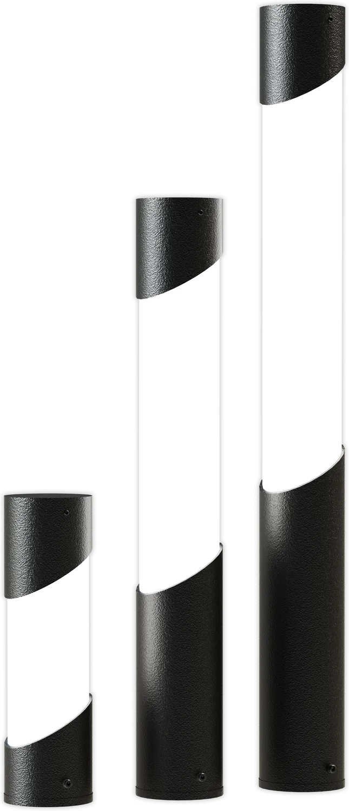
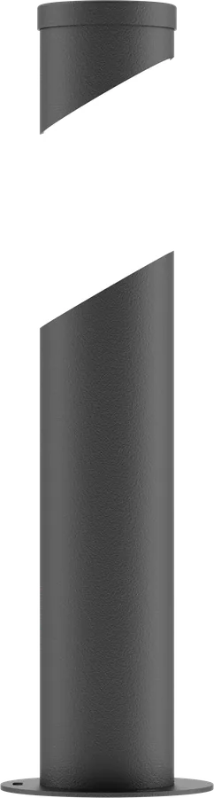
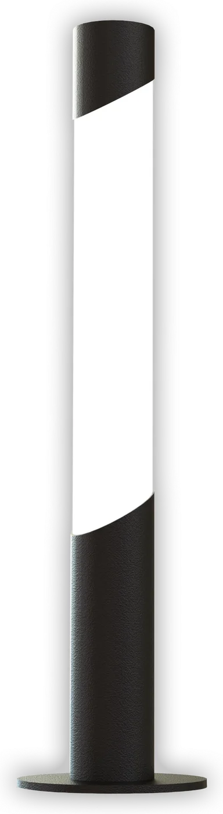
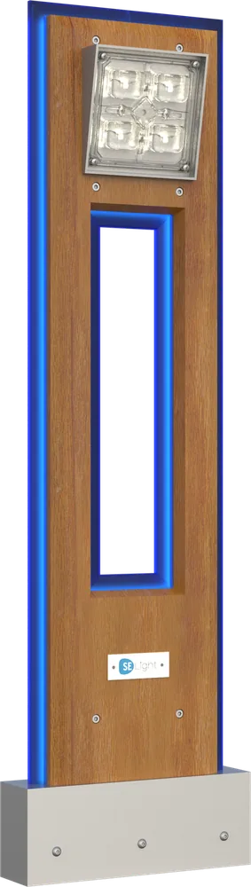
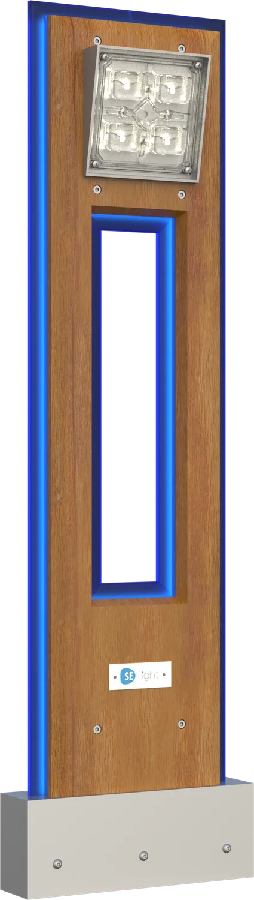
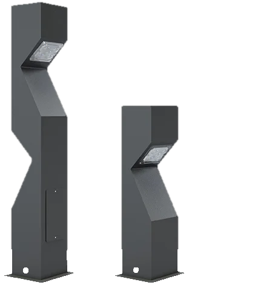
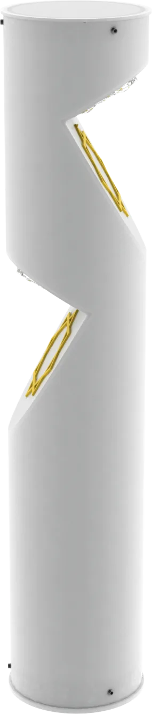
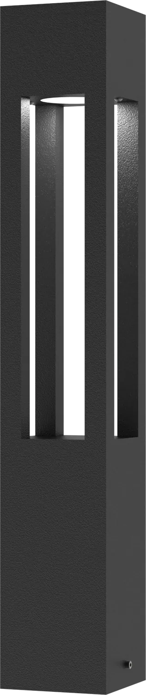

Bollard ve Peyzaj Armatürleri
SL-7360 Diyagonal ışıklı silindir
Gövdeyi çapraz kesen ışık bandı, modern peyzajda dinamik bir çizgi.
SL-7360, BeyTeknik'in LED bollard ve peyzaj aydınlatma armatürleri serisinden bir modeldir. 75 cm boy seçenekleriyle. Bursa'daki fabrikamızda üretilir; renk, boy ve armatür gücü projenize göre uyarlanabilir.
- Alüminyum Gövde Armatür
- Özgün estetik tasarım
- Asimetrik Işık Dağılımı
- PMMA Özel Tasarım Lens
- Elektrostatik Toz Boya
- Standart RAL 7021, istenen renkte
- Tüm bağlantı elemanları paslanmaz
Teknik özellikler
| Kod | Boy | Güç | Renk sıcaklığı | Işık akısı |
|---|---|---|---|---|
| SL7360-12CW | 75 cm | 12 W | 6500 K | 1.440 lm |
Fiyat ve proje desteği
Ölçü, renk ve adet bilgisini iletin, aynı gün dönüş yapalım.
Benzer ürünler

SL-7000Ekranlı ahşap bollard

SL-7000AAhşap panolu bilgi bollardı

SL-7010Kırık hatlı kare bollard

SL-7020Güneş motifli beyaz bollard

SL-7035Eğik başlıklı bollard

SL-7030Tek yönlü L bollard

SL-7032Çift yönlü T bollard

SL-7040İnce ışık yarıklı bollard